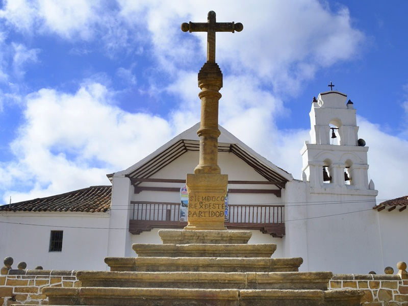
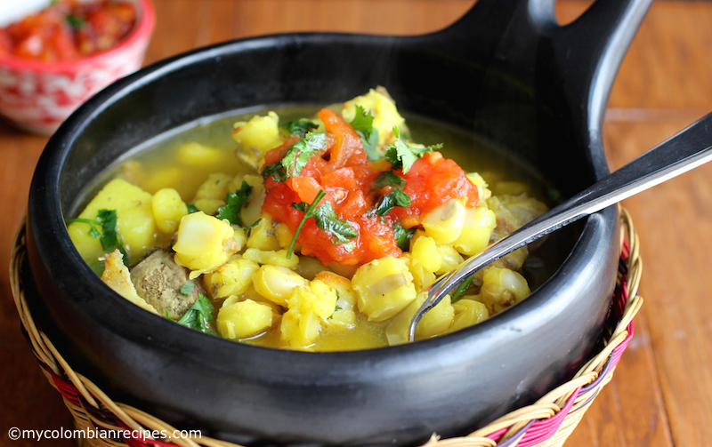
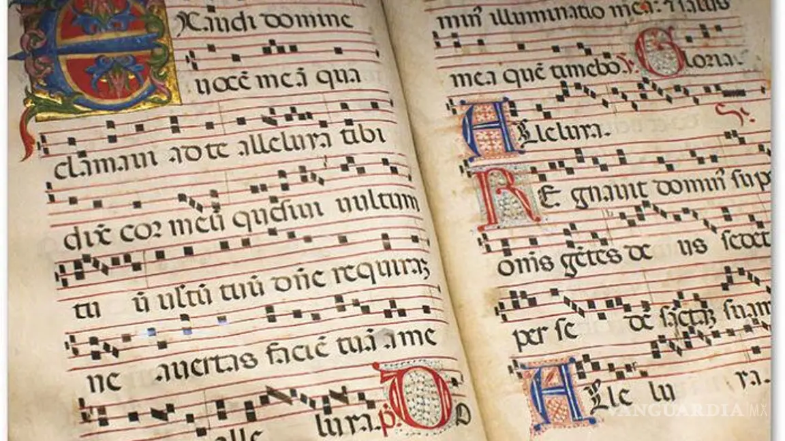
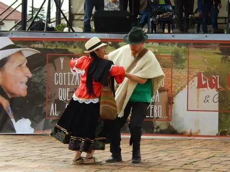
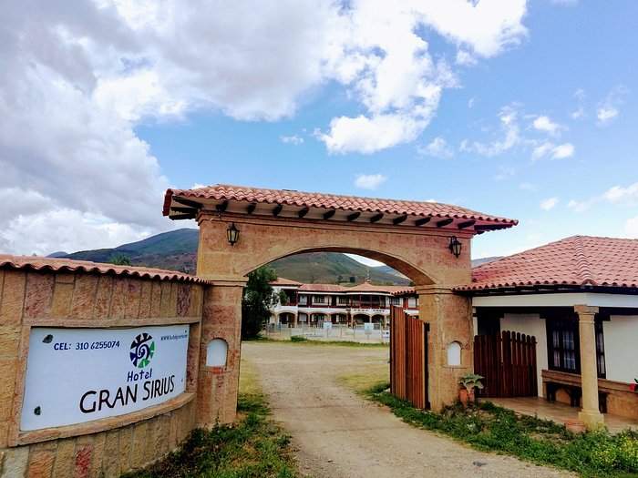
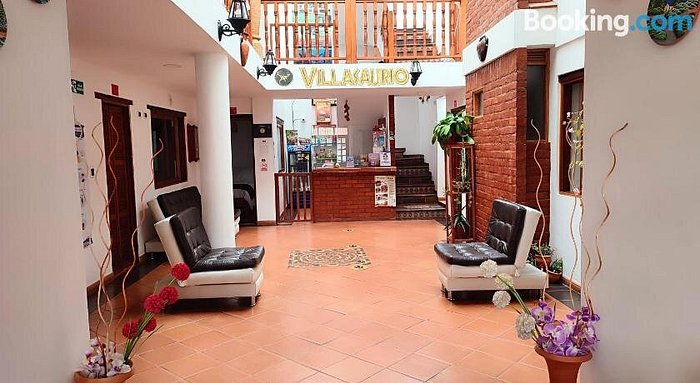
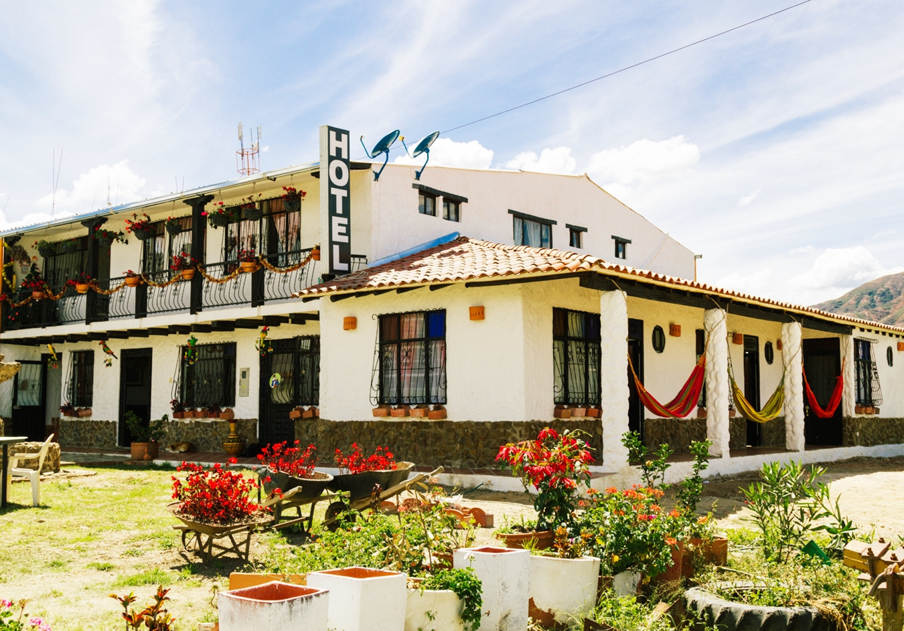
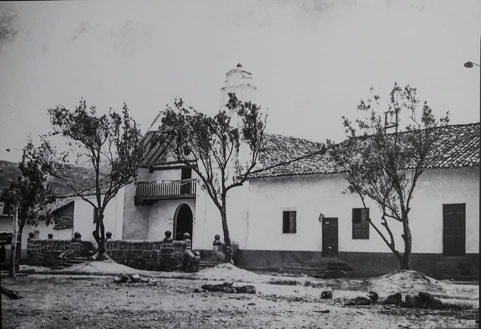

DESTINO TURÍSTICO
Descubre Sáchica
Historia, cultura, patrimonio, gastronomía y naturaleza se unen en uno de los destinos del Alto Ricaurte.
COMENZAR REVISTA
Historia, cultura, patrimonio, gastronomía y naturaleza se unen en uno de los destinos del Alto Ricaurte.
COMENZAR REVISTA
Bienvenido a esta revista turística dedicada a mostrar la historia, las tradiciones, los paisajes y los lugares que hacen de Sáchica un destino especial de Boyacá.
El propósito es ofrecer una guía atractiva y sencilla para habitantes y visitantes.
Encontrarás información sobre ubicación, historia, clima, atractivos turísticos, gastronomía, cultura, alojamiento y recomendaciones.
CONOCER SÁCHICASelecciona una sección para conocer más sobre Sáchica.
Ubicación, historia, clima y territorio.
Lugares turísticos representativos.
Historias y curiosidades.
Caminatas y turismo rural.
Sabores tradicionales.
Fiestas, música y tradiciones.
Opciones de alojamiento.
Fotografías del municipio.
Descubre dónde se encuentra y algunas características importantes del municipio.
Sáchica se encuentra en Colombia, en el departamento de Boyacá y forma parte de la provincia de Ricaurte.
Colombia
Boyacá
Sáchica
Ricaurte
Destino turístico cercano de Boyacá.
Reconocido por artesanías y cerámica.
Municipio vecino del Alto Ricaurte.
Destino con tradición artesanal.
Capital del departamento de Boyacá.
Sáchica se caracteriza por sus paisajes secos y su vegetación particular.
Se recomienda llevar ropa cómoda, hidratación y protección solar.

El territorio de Sáchica estuvo relacionado con comunidades indígenas muiscas.
Durante este periodo se desarrollaron diferentes construcciones religiosas.
El templo, la Cruz Atrial y las pinturas rupestres forman parte de su patrimonio.
Zonas montañosas y quebradas.
Áreas planas y onduladas.
Vegetación característica.
Parte de la hidrografía municipal.
Tradición campesina del municipio.
Cada atractivo tiene una experiencia diferente.
PATRIMONIO
Construcción histórica relacionada con el periodo colonial.
 ARQUEOLOGÍA
ARQUEOLOGÍA
Pictogramas antiguos ubicados en formaciones rocosas.
 HISTORIA
HISTORIA
Elemento relacionado con la historia del municipio.
 PATRIMONIO
PATRIMONIO
Elemento representativo del conjunto religioso.
 RELIGIÓN
RELIGIÓN
Tradición religiosa acompañada de paisaje.
 PREHISTORIA
PREHISTORIA
Experiencias relacionadas con dinosaurios y fósiles.
Algunas curiosidades sobre Sáchica.
Los monumentos del Sol y la Luna ubicados en el parque principal de Sáchica fueron creados como homenaje a las divinidades de los pueblos indígenas que habitaron la región, recordando la importancia que estos astros tenían en sus creencias y su relación con la naturaleza.
Las pinturas rupestres de Sáchica muestran rostros humanos, elementos de la naturaleza y símbolos antiguos. Algunos especialistas los relacionan con la magia, la religión y las deidades indígenas, y todavía no se sabe con certeza quiénes fueron sus autores.
La tradición cuenta que este monolito era utilizado para sujetar y castigar a indígenas acusados de ciertas faltas. Su ubicación frente al templo y cerca de la cruz atrial hace pensar que su uso estuvo relacionado con la época colonial.
En Gondava hay reproducciones de animales prehistóricos a tamaño real. Una de las más impresionantes es un braquiosaurio de unos 14 metros de altura.
La Cruz Atrial de Sáchica es monolítica, es decir, fue elaborada en una sola pieza de piedra. Está ubicada sobre siete escalones de piedra frente a la antigua capilla doctrinera.
Las aguas termales de Sáchica se caracterizan por tener una importante presencia de hierro, además de otros minerales como bicarbonatos o sulfatos. SITUR Boyacá
l templo tenía un coro para quienes permanecían dentro y un antecoro destinado a indígenas que permanecían fuera, una característica que refleja cómo se desarrolló la evangelización durante la época colonial.
La agricultura ha sido una parte importante de la identidad rural de Sáchica, y la cebolla se ha convertido en uno de los productos más asociados con el municipio y su tradición campesina.
Experiencias para disfrutar durante tu visita.
Recorre paisajes y senderos.
Disfruta recorridos rurales.
Conoce lugares históricos.
Captura paisajes y arquitectura.
Descubre espacios arqueológicos.
Disfruta el turismo rural.
Conoce algunas preparaciones tradicionales.

Preparación tradicional reconocida dentro de la región.

Preparación tradicional.

Preparación regional.

Plato tradicional de Boyacá.

Amasijo tradicional.
Música, religión, agricultura y gastronomía.

Celebración religiosa y cultural.

Expresión musical religiosa.

Parte de la identidad campesina.

Encuentro gastronómico.

Expresión musical campesina.
Algunos consejos para disfrutar tu visita de forma cómoda y responsable.
Utiliza ropa apropiada para caminar y recorrer los lugares turísticos.
Lleva bloqueador, gorra o sombrero durante los recorridos.
Lleva agua especialmente durante caminatas.
No arrojes basura y ayuda a conservar los lugares naturales.
No rayes ni dañes monumentos, pinturas rupestres o lugares históricos.
Consulta horarios, clima y eventos antes de viajar.
Algunas opciones para descansar en Sáchica.

ALOJAMIENTOOpción de alojamiento para visitantes de Sáchica.
 ALOJAMIENTO
ALOJAMIENTO
Alternativa de alojamiento dentro del municipio.

ALOJAMIENTOOpción hotelera para disfrutar la visita.

ALOJAMIENTOOtra alternativa de hospedaje para visitantes.
Diferentes establecimientos ofrecen gastronomía local.
Información relacionada con recorridos turísticos.
Historia, cultura y paisajes del municipio.



Descubre un territorio donde la historia, cultura, paisajes y gastronomía se unen.
VOLVER AL INICIO